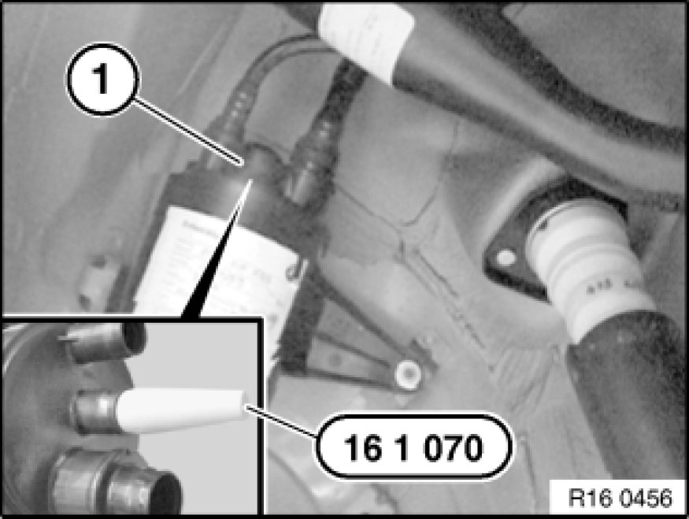
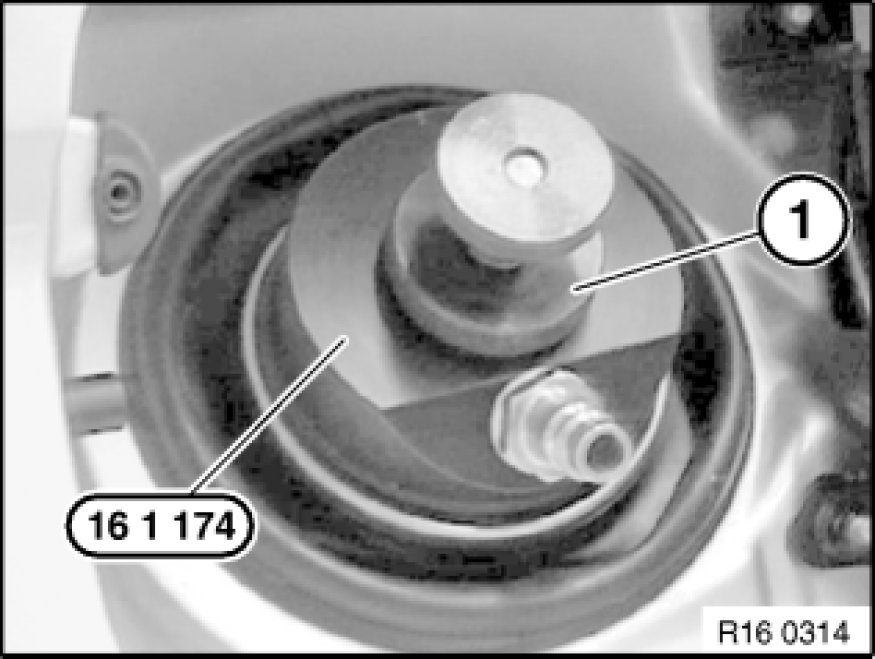
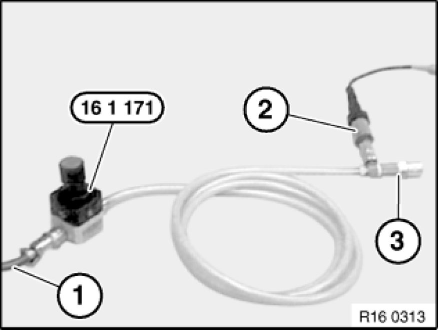

Checking Fuel Tank and Tank Ventilation System for Leaks
16 00 100 - Checking fuel tank and tank ventilation system for leaks

Special tools required:
- 13 3 010 13 3 010 Hose Clip
- 16 1 070 16 1 070 Plug (Carbon Canister)
- 16 1 171 16 1 170 Tester with Test Adapter
- 16 1 174 16 1 170 Tester with Test Adapter

Note:
The following procedure is only applicable to vehicles without the tank leak diagnosis module.
Check tank venting system if a leak is suspected.
Comply with the following conditions in order to obtain plausible test results:
- Content of fuel tank:
1. Maximum 90%
2. Minimum 13% (reserve telltale must not light up).
- Park the car in the workshop at least 2 hours before the test so that the fuel temperature is approximately that of the workshop temperature (ideal fuel temperature approx. 10 ... 20°C).
- Never refuel the vehicle directly prior to the leak test due to the strong emission of gas by the fresh fuel.

Remove rear right wheel arch trim.
Important!
Risk of breakage!
Carefully remove evaporation strainer with a screwdriver from carbon canister.
Remove evaporation strainer (1) from carbon canister.
Using special tool 16 1 070 16 1 070 Plug (Carbon Canister), seal opening for evaporation strainer on carbon canister.

Remove fuel filler cap and connect special tool 16 1 174 16 1 170 Tester with Test Adapter to fuel filler neck.
Clamp special tool 16 1 174 16 1 170 Tester with Test Adapter on fuel filler neck with adjusting wheel (1).

Important!
Set pressure regulator on special tool 16 1 171 16 1 170 Tester with Test Adapter fully in "-" direction.

Connect special tool 16 1 171 16 1 170 Tester with Test Adapter using compressed air line (1) to garage compressed air system (8 ... 10 bar).
Connect pressure sensor (2) from Diagnosis and Information System with a measuring range of 0...3.5 bar.
Important!
Do not yet connect fast-release coupling (3) of special tool 16 1 171 16 1 170 Tester with Test Adapter.

Select "Measurement" function on Diagnosis and Information System (DIS).
Using pressure regulator on special tool 16 1 171 16 1 170 Tester with Test Adapter, increase pressure by 0.050 bar.
Connect special tool 16 1 174 16 1 170 Tester with Test Adapter to fast-release coupling of special tool 16 1 171 16 1 170 Tester with Test Adapter.
Using pressure regulator on special tool 16 1 171 16 1 170 Tester with Test Adapter, reset gauge pressure in fuel tank to 0.050 bar.
Important!
Do not under any circumstances increase pressure by more than 0.05 bar as this would result in damage to the fuel tank and venting system.
Using special tool 13 3 010 13 3 010 Hose Clip, disconnect delivery line from special tool 16 1 171 16 1 170 Tester with Test Adapter to fuel filler neck.
Allow a rest period of approx. 20 secs.
Read off and note down starting pressure value.
Wait approx. 60 secs.
Read off final pressure value and compare with starting pressure value.
Measurement evaluation: